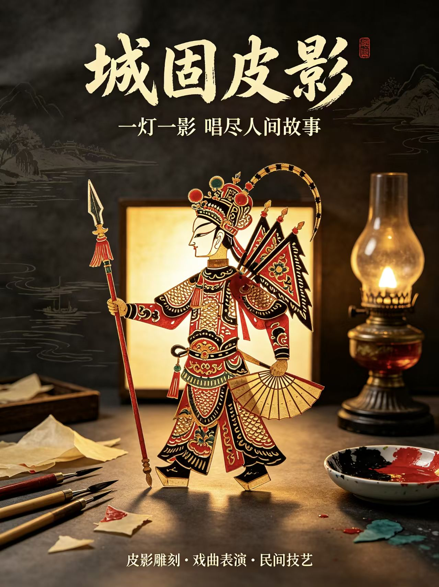

LIVING CULTURE OF SHAANXI
人间有戏，手上有光
一块牛皮、一捧黄土、一方土布、一根提线。陕西的民俗不在展柜里，它在灯影后面、在锣鼓中间、在老人手上一遍一遍重复的动作里。
CULTURE · 31 CRAFTS INDEXED
01 / MOTION
跟着AI漫剧看陕西
跟着漫剧与动画走进陕西非遗，点击画面即可放大播放，按 Esc 退出。
02 / FILM
锦绣陕西 · 形象片
跟着镜头走过八百里秦川，点击画面即可放大播放，按 Esc 退出。
影像为 AI 生成演绎，用于呈现非遗的叙事脉络，不代表历史现场的纪实记录。
02 / POSTERS
海报上的六种手艺
剪纸、泥塑、秦腔、刺绣、皮影、架花。六张海报都是张骞故里的乡土手艺，点击图片可以放大细看。
03 / CHRONOLOGY
一条时间轴，从汉到今天
把非遗按年代排开，会发现它们并不是一层层叠上去的，而是同时活着。点击任意一条，展开它的来历。
04 / CRAFT & CREATIVE
非遗文创 · 三十一种手艺
点地图上的光点，右侧滑出这座城的全部手艺；也可以用右上角的下拉菜单直接跳到任意一件。三十一件，一件不漏。
SHAANXI · CRAFT INDEX
点击坐标 · 展开这座城的手艺
点击地图上的光点 · 右侧展开这座城的全部手艺
05 / THE FULL INDEX
手艺合集
三十一件非遗文创全部列在这里，点击照片放大，或阅读完整来历。